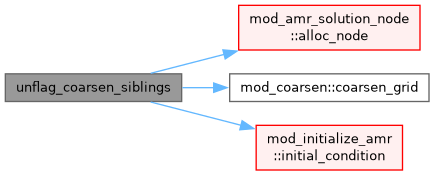

mod_coarsen_refine.t File Reference
Go to the source code of this file.
Modules | |
| module | mod_coarsen_refine |
| Module to coarsen and refine grids for AMR. | |
Functions/Subroutines | |
| subroutine, public | mod_coarsen_refine::amr_coarsen_refine |
| coarsen and refine blocks to update AMR grid | |
| subroutine, public | mod_coarsen_refine::amr_rebalance |
| Cost-weighted rebalance without refine/coarsen. For static/uniform grids (refine_max_level=1) amr_coarsen_refine never runs, so the cost-weighted load_balance has no invocation point and the partition stays at the initial equal-block (cell-count) split -> photosphere EoS-heavy ranks stall the rest. This migrates blocks to equalise the measured per-block cost (block_cost, populated when lb_automatic is on) then rebuilds connectivity + ghosts, mirroring the tail of amr_coarsen_refine. | |
| subroutine | unflag_coarsen_siblings |
Function/Subroutine Documentation
◆ unflag_coarsen_siblings()
| subroutine proper_nesting::unflag_coarsen_siblings |
Definition at line 332 of file mod_coarsen_refine.t.
Here is the call graph for this function:

Generated by